In brief
Blizzard announced over 600 new recipes without publishing a complete list. This page gathers the 223 Enchanting recipes recorded in the game files (client 1.60.1.70862, consulted on 12 November 2026). Names and required skills come from the game files. An acquisition marked “unknown” remains to be confirmed. Tables are grouped by required skill bracket. When acquisition, source or zone is not given in the data consulted, the cell says so. No drop rates are repeated; none were given.[1][2][4][3]
Key points
- 223 Enchanting recipes listed below, from the game files (client 1.60.1.70862, 12 November 2026); acquisition marked “unknown” remains to be confirmed.[4] Game data (client 1.60.1.70862)
- Acquisition given in the game files: trainer 64, drop 1, quest 2, reputation 11, unknown 145.[4] Game data (client 1.60.1.70862)
- Blizzard has not published the complete recipe list, nor trainers, vendors, prices or drop rates.[1][2]
- Reagents of 223 recipes and 103 materials linked to their “where to find it” card (game files).[5] Game data (client 1.60.1.70862)
How to read this list
This list is not official. Blizzard has not published the details of this profession’s recipes (vendors, trainers, monsters, zones, prices, drop rates). The names and skills below come from the game files (client 1.60.1.70862). An acquisition marked “unknown” remains to be confirmed. The French name is the in-game localization when one was found; otherwise the English name is used in both languages. “Trainer” also covers recipes listed as learned automatically with the profession. An overview page already online, Recipes and advanced blueprints (/en/professions/recipes-and-advanced-blueprints/), restates the official acquisition rules and the lootable recipes already shown by zone.[1][2][4][3]
Skill 1–75 — 12 recipes (game data)
| Recipe | Required skill | How obtained | Source | Zone | Status |
|---|---|---|---|---|---|
| Dust to Motes | 1 | trainer | learned automatically with the profession | not recorded | game data |
| Enchant Bracer - Inferior Stamina | 1 | trainer | learned automatically with the profession | not recorded | game data |
| Enchanted Lute | 1 | trainer | profession trainer (unnamed) | not recorded | game data |
| Novice's Practice Wand | 1 | trainer | learned automatically with the profession | not recorded | game data |
| Runed Copper Rod | 1 | trainer | learned automatically with the profession | not recorded | game data |
| Minor Wizard Oil | 5 | unknown | not recorded | not recorded | game data — acquisition to be confirmed |
| Enchant Chest - Minor Intellect | 20 | unknown | not recorded | not recorded | game data — acquisition to be confirmed |
| Enchant Bracer - Minor Spirit | 60 | unknown | not recorded | not recorded | game data — acquisition to be confirmed |
| Enchant Chest - Inferior Stamina | 60 | trainer | profession trainer (unnamed) | not recorded | game data |
| Lesser Magic Wand | 65 | trainer | profession trainer (unnamed) | not recorded | game data |
| Enchant Bracer - Minor Deflect | 70 | trainer | profession trainer (unnamed) | not recorded | game data |
| Enchant Bracer - Minor Intellect | 70 | unknown | not recorded | not recorded | game data — acquisition to be confirmed |
Skill 76–150 — 45 recipes (game data)
| Recipe | Required skill | How obtained | Source | Zone | Status |
|---|---|---|---|---|---|
| Enchant Bracer - Minor Strength | 80 | unknown | not recorded | not recorded | game data — acquisition to be confirmed |
| Enchant Chest - Lesser Intellect | 80 | unknown | not recorded | not recorded | game data — acquisition to be confirmed |
| Enchant Chest - Minor Absorption | 80 | trainer | profession trainer (unnamed) | not recorded | game data |
| Enchant Cloak - Minor Resistance | 85 | trainer | profession trainer (unnamed) | not recorded | game data |
| Enchant Bracer - Minor Healing Power | 90 | unknown | not recorded | not recorded | game data — acquisition to be confirmed |
| Enchant Bracer - Minor Stamina | 90 | trainer | profession trainer (unnamed) | not recorded | game data |
| Enchant Cloak - Minor Protection | 90 | unknown | not recorded | not recorded | game data — acquisition to be confirmed |
| Enchant Weapon - Minor Beastslayer | 90 | unknown | not recorded | not recorded | game data — acquisition to be confirmed |
| Enchant Chest - Lesser Stamina | 95 | trainer | profession trainer (unnamed) | not recorded | game data |
| Enchant 2H Weapon - Lesser Intellect | 100 | unknown | not recorded | not recorded | game data — acquisition to be confirmed |
| Greater Magic Wand | 100 | trainer | profession trainer (unnamed) | not recorded | game data |
| Enchant Bracer - Minor Agility | 105 | trainer | profession trainer (unnamed) | not recorded | game data |
| Enchant 2H Weapon - Lesser Spirit | 110 | unknown | not recorded | not recorded | game data — acquisition to be confirmed |
| Enchant Cloak - Minor Agility | 110 | unknown | not recorded | not recorded | game data — acquisition to be confirmed |
| Enchant Weapon - Minor Striking | 110 | trainer | profession trainer (unnamed) | not recorded | game data |
| Enchant Shield - Lesser Protection | 115 | unknown | not recorded | not recorded | game data — acquisition to be confirmed |
| Enchant 2H Weapon - Minor Impact | 120 | trainer | profession trainer (unnamed) | not recorded | game data |
| Enchant Bracer - Lesser Spirit | 120 | unknown | not recorded | not recorded | game data — acquisition to be confirmed |
| Enchant Shield - Minor Stamina | 120 | trainer | profession trainer (unnamed) | not recorded | game data |
| Runed Silver Rod | 120 | trainer | profession trainer (unnamed) | not recorded | game data |
| Enchant Boots - Minor Agility | 125 | unknown | not recorded | not recorded | game data — acquisition to be confirmed |
| Enchant Boots - Minor Stamina | 125 | unknown | not recorded | not recorded | game data — acquisition to be confirmed |
| Enchant Cloak - Lesser Protection | 130 | trainer | profession trainer (unnamed) | not recorded | game data |
| Mystic Mushroom | 130 | unknown | not recorded | not recorded | game data — acquisition to be confirmed |
| Polished Driftwood Icon | 130 | unknown | not recorded | not recorded | game data — acquisition to be confirmed |
| Tenets of the Silver Hand | 130 | unknown | not recorded | not recorded | game data — acquisition to be confirmed |
| Enchant Chest - Stamina | 135 | trainer | profession trainer (unnamed) | not recorded | game data |
| Enchant Cloak - Lesser Shadow Resistance | 135 | unknown | not recorded | not recorded | game data — acquisition to be confirmed |
| Arcane Salvager | 140 | drop | Rath'mael ; Charlga Razorflank | Razorfen Kraul ; Ruins of Lordaeron | game data |
| Enchant Bracer - Lesser Agility | 140 | quest | Mysterious Mysticism | not recorded | game data |
| Enchant Bracer - Lesser Strength | 140 | unknown | not recorded | not recorded | game data — acquisition to be confirmed |
| Enchant Cloak - Lesser Fire Resistance | 140 | trainer | profession trainer (unnamed) | not recorded | game data |
| Enchant Weapon - Insight | 140 | unknown | not recorded | not recorded | game data — acquisition to be confirmed |
| Enchant Weapon - Recovery | 140 | unknown | not recorded | not recorded | game data — acquisition to be confirmed |
| Enchant Weapon - Revelation | 140 | unknown | not recorded | not recorded | game data — acquisition to be confirmed |
| Glimmering Staff | 140 | unknown | not recorded | not recorded | game data — acquisition to be confirmed |
| Orb of Mystic Insight | 140 | unknown | not recorded | not recorded | game data — acquisition to be confirmed |
| Orb of Souls | 140 | unknown | not recorded | not recorded | game data — acquisition to be confirmed |
| Soulstaff | 140 | unknown | not recorded | not recorded | game data — acquisition to be confirmed |
| Enchant Bracer - Lesser Stamina | 145 | trainer | profession trainer (unnamed) | not recorded | game data |
| Enchant Gloves - Fishing | 145 | unknown | not recorded | not recorded | game data — acquisition to be confirmed |
| Enchant Gloves - Herbalism | 145 | unknown | not recorded | not recorded | game data — acquisition to be confirmed |
| Enchant Gloves - Mining | 145 | unknown | not recorded | not recorded | game data — acquisition to be confirmed |
| Enchant Shield - Lesser Spirit | 145 | trainer | profession trainer (unnamed) | not recorded | game data |
| Minor Mana Oil | 150 | unknown | not recorded | not recorded | game data — acquisition to be confirmed |
Skill 151–225 — 60 recipes (game data)
| Recipe | Required skill | How obtained | Source | Zone | Status |
|---|---|---|---|---|---|
| Enchant Chest - Lesser Absorption | 155 | trainer | profession trainer (unnamed) | not recorded | game data |
| Enchant Weapon - Lesser Striking | 155 | trainer | profession trainer (unnamed) | not recorded | game data |
| Enchant 2H Weapon - Lesser Impact | 160 | trainer | profession trainer (unnamed) | not recorded | game data |
| Enchant Chest - Intellect | 160 | trainer | profession trainer (unnamed) | not recorded | game data |
| Enchant Bracer - Lesser Intellect | 165 | trainer | profession trainer (unnamed) | not recorded | game data |
| Enchant Chest - Minor Stats | 165 | trainer | profession trainer (unnamed) | not recorded | game data |
| Enchant Cloak - Defense | 165 | trainer | profession trainer (unnamed) | not recorded | game data |
| Enchant Shield - Lesser Stamina | 165 | trainer | profession trainer (unnamed) | not recorded | game data |
| Lesser Mystic Wand | 165 | trainer | profession trainer (unnamed) | not recorded | game data |
| Enchant Boots - Lesser Agility | 170 | trainer | profession trainer (unnamed) | not recorded | game data |
| Enchant Bracer - Lesser Deflection | 170 | unknown | not recorded | not recorded | game data — acquisition to be confirmed |
| Enchant Chest - Greater Stamina | 170 | trainer | profession trainer (unnamed) | not recorded | game data |
| Enchant Bracer - Spirit | 175 | trainer | profession trainer (unnamed) | not recorded | game data |
| Enchant Weapon - Lesser Beastslayer | 175 | unknown | not recorded | not recorded | game data — acquisition to be confirmed |
| Enchant Weapon - Lesser Elemental Slayer | 175 | unknown | not recorded | not recorded | game data — acquisition to be confirmed |
| Enchant Boots - Lesser Stamina | 180 | trainer | profession trainer (unnamed) | not recorded | game data |
| Enchant Bracer - Stamina | 180 | trainer | profession trainer (unnamed) | not recorded | game data |
| Enchant Cloak - Fire Resistance | 185 | trainer | profession trainer (unnamed) | not recorded | game data |
| Twisted Nether Wand | 185 | unknown | not recorded | not recorded | game data — acquisition to be confirmed |
| Enchant Boots - Lesser Spirit | 190 | unknown | not recorded | not recorded | game data — acquisition to be confirmed |
| Enchant Bracer - Agility | 190 | unknown | not recorded | not recorded | game data — acquisition to be confirmed |
| Enchant Bracer - Agility | 190 | unknown | not recorded | not recorded | game data — acquisition to be confirmed |
| Enchant Bracer - Strength | 190 | trainer | profession trainer (unnamed) | not recorded | game data |
| Enchant Shield - Spirit | 190 | trainer | profession trainer (unnamed) | not recorded | game data |
| Enchant Weapon - Winter's Might | 190 | unknown | not recorded | not recorded | game data — acquisition to be confirmed |
| Enchant Chest - Greater Intellect | 195 | trainer | profession trainer (unnamed) | not recorded | game data |
| Enchant Shield - Lesser Block | 195 | unknown | not recorded | not recorded | game data — acquisition to be confirmed |
| Enchant Gloves - Skinning | 200 | unknown | not recorded | not recorded | game data — acquisition to be confirmed |
| Lesser Wizard Oil | 200 | unknown | not recorded | not recorded | game data — acquisition to be confirmed |
| Enchant Bracer - Lesser Healing Power | 205 | quest | Mysterious Mysticism | not recorded | game data |
| Enchant Weapon - Striking | 205 | trainer | profession trainer (unnamed) | not recorded | game data |
| Enchant 2H Weapon - Impact | 210 | trainer | profession trainer (unnamed) | not recorded | game data |
| Enchant 2H Weapon - Lesser Agility | 210 | unknown | not recorded | not recorded | game data — acquisition to be confirmed |
| Enchant Chest - Lesser Stats | 210 | trainer | profession trainer (unnamed) | not recorded | game data |
| Enchant Necklace - Agility | 210 | unknown | not recorded | not recorded | game data — acquisition to be confirmed |
| Enchant Necklace - Deflection | 210 | unknown | not recorded | not recorded | game data — acquisition to be confirmed |
| Enchant Necklace - Healing Power | 210 | unknown | not recorded | not recorded | game data — acquisition to be confirmed |
| Enchant Necklace - Spell Power | 210 | unknown | not recorded | not recorded | game data — acquisition to be confirmed |
| Enchant Necklace - Strength | 210 | unknown | not recorded | not recorded | game data — acquisition to be confirmed |
| Enchant Shield - Stamina | 210 | unknown | not recorded | not recorded | game data — acquisition to be confirmed |
| Libram of Invocation | 210 | unknown | not recorded | not recorded | game data — acquisition to be confirmed |
| Runed Truesilver Rod | 210 | trainer | profession trainer (unnamed) | not recorded | game data |
| Talons of Wrath | 210 | unknown | not recorded | not recorded | game data — acquisition to be confirmed |
| Totem of Ancestral Protection | 210 | unknown | not recorded | not recorded | game data — acquisition to be confirmed |
| Dreambough Wand | 215 | unknown | not recorded | not recorded | game data — acquisition to be confirmed |
| Enchant Cloak - Greater Defense | 215 | trainer | profession trainer (unnamed) | not recorded | game data |
| Enchant Cloak - Resistance | 215 | trainer | profession trainer (unnamed) | not recorded | game data |
| Enchant Gloves - Advanced Mining | 215 | unknown | not recorded | not recorded | game data — acquisition to be confirmed |
| Dreamstaff | 220 | unknown | not recorded | not recorded | game data — acquisition to be confirmed |
| Enchant 2H Weapon - Lesser Strength | 220 | unknown | not recorded | not recorded | game data — acquisition to be confirmed |
| Enchant Bracer - Greater Spirit | 220 | unknown | not recorded | not recorded | game data — acquisition to be confirmed |
| Enchant Bracer - Intellect | 220 | trainer | profession trainer (unnamed) | not recorded | game data |
| Enchant Chest - Absorption | 220 | unknown | not recorded | not recorded | game data — acquisition to be confirmed |
| Enchant Gloves - Agility | 220 | trainer | profession trainer (unnamed) | not recorded | game data |
| Radiant Staff | 220 | unknown | not recorded | not recorded | game data — acquisition to be confirmed |
| Truesilver Conduit | 220 | unknown | not recorded | not recorded | game data — acquisition to be confirmed |
| Twisting Essence Jar | 220 | unknown | not recorded | not recorded | game data — acquisition to be confirmed |
| Enchant Boots - Stamina | 225 | trainer | profession trainer (unnamed) | not recorded | game data |
| Enchant Cloak - Lesser Agility | 225 | unknown | not recorded | not recorded | game data — acquisition to be confirmed |
| Enchant Gloves - Advanced Herbalism | 225 | unknown | not recorded | not recorded | game data — acquisition to be confirmed |
Skill 226–300 — 106 recipes (game data)
| Recipe | Required skill | How obtained | Source | Zone | Status |
|---|---|---|---|---|---|
| Enchant Chest - Superior Stamina | 230 | trainer | profession trainer (unnamed) | not recorded | game data |
| Enchant Weapon - Demonslaying | 230 | unknown | not recorded | not recorded | game data — acquisition to be confirmed |
| Enchant Boots - Minor Speed | 235 | trainer | profession trainer (unnamed) | not recorded | game data |
| Enchant Bracer - Deflection | 235 | unknown | not recorded | not recorded | game data — acquisition to be confirmed |
| Enchant Gloves - Strength | 235 | trainer | profession trainer (unnamed) | not recorded | game data |
| Enchant Shield - Frost Resistance | 235 | unknown | not recorded | not recorded | game data — acquisition to be confirmed |
| Enchant Bracer - Greater Agility | 240 | unknown | not recorded | not recorded | game data — acquisition to be confirmed |
| Enchant Chest - Superior Intellect | 240 | trainer | profession trainer (unnamed) | not recorded | game data |
| Enchant Shield - Greater Spirit | 240 | trainer | profession trainer (unnamed) | not recorded | game data |
| Enchant Boots - Agility | 245 | trainer | profession trainer (unnamed) | not recorded | game data |
| Enchant Bracer - Greater Stamina | 245 | unknown | not recorded | not recorded | game data — acquisition to be confirmed |
| Enchanted Leather | 245 | trainer | profession trainer (unnamed) | not recorded | game data |
| Enchanted Thorium | 245 | trainer | profession trainer (unnamed) | not recorded | game data |
| Lesser Eternal Wand | 245 | unknown | not recorded | not recorded | game data — acquisition to be confirmed |
| Enchant 2H Weapon - Greater Impact | 250 | trainer | profession trainer (unnamed) | not recorded | game data |
| Enchant Bracer - Greater Strength | 250 | trainer | profession trainer (unnamed) | not recorded | game data |
| Enchant Gloves - Advanced Skinning | 250 | unknown | not recorded | not recorded | game data — acquisition to be confirmed |
| Enchant Gloves - Riding Skill | 250 | unknown | not recorded | not recorded | game data — acquisition to be confirmed |
| Lesser Mana Oil | 250 | unknown | not recorded | not recorded | game data — acquisition to be confirmed |
| Enchant Bracer - Greater Intellect | 255 | unknown | not recorded | not recorded | game data — acquisition to be confirmed |
| Enchant Chest - Stats | 255 | trainer | profession trainer (unnamed) | not recorded | game data |
| Enchant Weapon - Greater Striking | 255 | trainer | profession trainer (unnamed) | not recorded | game data |
| Enchant Boots - Greater Stamina | 260 | unknown | not recorded | not recorded | game data — acquisition to be confirmed |
| Enchant Gloves - Minor Haste | 260 | trainer | profession trainer (unnamed) | not recorded | game data |
| Enchant Cloak - Greater Resistance | 265 | unknown | not recorded | not recorded | game data — acquisition to be confirmed |
| Enchant Shield - Greater Stamina | 265 | unknown | not recorded | not recorded | game data — acquisition to be confirmed |
| Enchant Weapon - Fiery Weapon | 265 | unknown | not recorded | not recorded | game data — acquisition to be confirmed |
| Frozen Heart of the Mountain | 265 | unknown | not recorded | not recorded | game data — acquisition to be confirmed |
| Molten Heart of the Mountain | 265 | unknown | not recorded | not recorded | game data — acquisition to be confirmed |
| Smoking Heart of the Mountain | 265 | unknown | not recorded | not recorded | game data — acquisition to be confirmed |
| Enchant Bracer - Superior Spirit | 270 | unknown | not recorded | not recorded | game data — acquisition to be confirmed |
| Enchant Gloves - Greater Agility | 270 | unknown | not recorded | not recorded | game data — acquisition to be confirmed |
| Brilliant Wand | 275 | unknown | not recorded | not recorded | game data — acquisition to be confirmed |
| Enchant Boots - Spirit | 275 | unknown | not recorded | not recorded | game data — acquisition to be confirmed |
| Enchant Chest - Major Stamina | 275 | unknown | not recorded | not recorded | game data — acquisition to be confirmed |
| Greater Eternal Wand | 275 | unknown | not recorded | not recorded | game data — acquisition to be confirmed |
| Wizard Oil | 275 | unknown | not recorded | not recorded | game data — acquisition to be confirmed |
| Enchant 2H Weapon - Grand Arcanist | 280 | unknown | not recorded | not recorded | game data — acquisition to be confirmed |
| Enchant 2H Weapon - Grand Inquisitor | 280 | unknown | not recorded | not recorded | game data — acquisition to be confirmed |
| Enchant Shield - Superior Spirit | 280 | unknown | not recorded | not recorded | game data — acquisition to be confirmed |
| Enchant Weapon - Grand Sorcerer | 280 | unknown | not recorded | not recorded | game data — acquisition to be confirmed |
| Enchant Cloak - Superior Defense | 285 | unknown | not recorded | not recorded | game data — acquisition to be confirmed |
| Enchant Weapon - Icy Chill | 285 | unknown | not recorded | not recorded | game data — acquisition to be confirmed |
| Enchant 2H Weapon - Agility | 290 | reputation | Timbermaw Hold (Friendly) | not recorded | game data |
| Enchant 2H Weapon - Strength | 290 | unknown | not recorded | not recorded | game data — acquisition to be confirmed |
| Enchant Bracer - Mana Regeneration | 290 | reputation | Argent Dawn (Honored) | not recorded | game data |
| Enchant Chest - Major Intellect | 290 | unknown | not recorded | not recorded | game data — acquisition to be confirmed |
| Enchant Weapon - Agility | 290 | reputation | Timbermaw Hold (Honored) | not recorded | game data |
| Enchant Weapon - Strength | 290 | reputation | Thorium Brotherhood (Friendly) | not recorded | game data |
| Runed Arcanite Rod | 290 | unknown | not recorded | not recorded | game data — acquisition to be confirmed |
| Enchant 2H Weapon - Superior Impact | 295 | unknown | not recorded | not recorded | game data — acquisition to be confirmed |
| Enchant Boots - Greater Agility | 295 | unknown | not recorded | not recorded | game data — acquisition to be confirmed |
| Enchant Bracer - Superior Agility | 295 | unknown | not recorded | not recorded | game data — acquisition to be confirmed |
| Enchant Bracer - Superior Strength | 295 | unknown | not recorded | not recorded | game data — acquisition to be confirmed |
| Enchant Gloves - Greater Strength | 295 | unknown | not recorded | not recorded | game data — acquisition to be confirmed |
| Enchant Gloves - Lotus Claw | 295 | unknown | not recorded | not recorded | game data — acquisition to be confirmed |
| Enchant Weapon - Unholy Weapon | 295 | unknown | not recorded | not recorded | game data — acquisition to be confirmed |
| Arcane Forge | 300 | unknown | not recorded | not recorded | game data — acquisition to be confirmed |
| Brilliant Mana Oil | 300 | reputation | Zandalar Tribe (Friendly) | not recorded | game data |
| Brilliant Wizard Oil | 300 | reputation | Zandalar Tribe (Honored) | not recorded | game data |
| Enchant 2H Weapon - Major Intellect | 300 | unknown | not recorded | not recorded | game data — acquisition to be confirmed |
| Enchant 2H Weapon - Major Spirit | 300 | unknown | not recorded | not recorded | game data — acquisition to be confirmed |
| Enchant 2H Weapon - Mighty Healing Power | 300 | unknown | not recorded | not recorded | game data — acquisition to be confirmed |
| Enchant 2H Weapon - Mighty Spell Power | 300 | unknown | not recorded | not recorded | game data — acquisition to be confirmed |
| Enchant 2H Weapon - Spellblasting | 300 | unknown | not recorded | not recorded | game data — acquisition to be confirmed |
| Enchant Bracer - Greater Spellpower | 300 | unknown | not recorded | not recorded | game data — acquisition to be confirmed |
| Enchant Bracer - Healing Power | 300 | reputation | Argent Dawn (Revered) | not recorded | game data |
| Enchant Bracer - Spell Power | 300 | trainer | profession trainer (unnamed) | not recorded | game data |
| Enchant Bracer - Superior Deflection | 300 | unknown | not recorded | not recorded | game data — acquisition to be confirmed |
| Enchant Bracer - Superior Intellect | 300 | unknown | not recorded | not recorded | game data — acquisition to be confirmed |
| Enchant Bracer - Superior Stamina | 300 | unknown | not recorded | not recorded | game data — acquisition to be confirmed |
| Enchant Chest - Greater Stats | 300 | unknown | not recorded | not recorded | game data — acquisition to be confirmed |
| Enchant Cloak - Agility | 300 | unknown | not recorded | not recorded | game data — acquisition to be confirmed |
| Enchant Cloak - Dodge | 300 | unknown | not recorded | not recorded | game data — acquisition to be confirmed |
| Enchant Cloak - Greater Fire Resistance | 300 | reputation | Cenarion Circle (Friendly) | not recorded | game data |
| Enchant Cloak - Greater Nature Resistance | 300 | reputation | Cenarion Circle (Honored) | not recorded | game data |
| Enchant Cloak - Stealth | 300 | unknown | not recorded | not recorded | game data — acquisition to be confirmed |
| Enchant Cloak - Subtlety | 300 | unknown | not recorded | not recorded | game data — acquisition to be confirmed |
| Enchant Gloves - Arcane Power | 300 | unknown | not recorded | not recorded | game data — acquisition to be confirmed |
| Enchant Gloves - Fire Power | 300 | unknown | not recorded | not recorded | game data — acquisition to be confirmed |
| Enchant Gloves - Frost Power | 300 | unknown | not recorded | not recorded | game data — acquisition to be confirmed |
| Enchant Gloves - Healing Power | 300 | unknown | not recorded | not recorded | game data — acquisition to be confirmed |
| Enchant Gloves - Holy Power | 300 | unknown | not recorded | not recorded | game data — acquisition to be confirmed |
| Enchant Gloves - Natural Power | 300 | unknown | not recorded | not recorded | game data — acquisition to be confirmed |
| Enchant Gloves - Shadow Power | 300 | unknown | not recorded | not recorded | game data — acquisition to be confirmed |
| Enchant Gloves - Superior Agility | 300 | unknown | not recorded | not recorded | game data — acquisition to be confirmed |
| Enchant Gloves - Superior Strength | 300 | unknown | not recorded | not recorded | game data — acquisition to be confirmed |
| Enchant Gloves - Threat | 300 | unknown | not recorded | not recorded | game data — acquisition to be confirmed |
| Enchant Off-Hand - Excellent Spirit | 300 | unknown | not recorded | not recorded | game data — acquisition to be confirmed |
| Enchant Off-Hand - Superior Intellect | 300 | unknown | not recorded | not recorded | game data — acquisition to be confirmed |
| Enchant Off-Hand - Wisdom | 300 | unknown | not recorded | not recorded | game data — acquisition to be confirmed |
| Enchant Shield - Critical Strike | 300 | unknown | not recorded | not recorded | game data — acquisition to be confirmed |
| Enchant Shield - Excellent Stamina | 300 | unknown | not recorded | not recorded | game data — acquisition to be confirmed |
| Enchant Weapon - Crusader | 300 | unknown | not recorded | not recorded | game data — acquisition to be confirmed |
| Enchant Weapon - Healing Power | 300 | unknown | not recorded | not recorded | game data — acquisition to be confirmed |
| Enchant Weapon - Lifestealing | 300 | unknown | not recorded | not recorded | game data — acquisition to be confirmed |
| Enchant Weapon - Mighty Intellect | 300 | reputation | Thorium Brotherhood (Revered) | not recorded | game data |
| Enchant Weapon - Mighty Spirit | 300 | reputation | Thorium Brotherhood (Honored) | not recorded | game data |
| Enchant Weapon - Spell Power | 300 | unknown | not recorded | not recorded | game data — acquisition to be confirmed |
| Enchant Weapon - Superior Striking | 300 | unknown | not recorded | not recorded | game data — acquisition to be confirmed |
| Idol of Swiftness | 300 | unknown | not recorded | not recorded | game data — acquisition to be confirmed |
| Idol of the Ursine Twins | 300 | unknown | not recorded | not recorded | game data — acquisition to be confirmed |
| Libram of Infusion | 300 | unknown | not recorded | not recorded | game data — acquisition to be confirmed |
| Steadfast Libram | 300 | unknown | not recorded | not recorded | game data — acquisition to be confirmed |
| Torch of Light | 300 | unknown | not recorded | not recorded | game data — acquisition to be confirmed |
| Totem of Urgency | 300 | unknown | not recorded | not recorded | game data — acquisition to be confirmed |
Materials: where to find them
The 103 materials asked for by the 223 recipes on this page, sorted by family, with the number of recipes using each. Each material leads to its “where to find it” card; the folding table gives the reagents of each recipe. Reagents read from the game files (client 1.60.1.70862). All families: Materials: where to find them.[5] Game data (client 1.60.1.70862)
Ore, bars and stone — 8
 Pyrite4
Pyrite4 Truesilver Bar2
Truesilver Bar2 Azerothium Bar1
Azerothium Bar1 Bauxite1
Bauxite1 Guardian Stone1
Guardian Stone1 Iron Ore1
Iron Ore1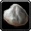
Silver Ore1 Thorium Bar1
Thorium Bar1
Herbs — 12
 Purple Lotus4
Purple Lotus4 Death Lotus2
Death Lotus2 Firebloom2
Firebloom2 Black Lotus1
Black Lotus1 Frilled Lichen1
Frilled Lichen1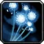
Icecap1 Kingsblood1
Kingsblood1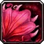
Rosecap1 Stranglevine1
Stranglevine1 Sungrass1
Sungrass1- Wildvine1
 Wintersbite1
Wintersbite1
Leather, hides and scales — 3
Elemental and enchanting materials — 43
 Large Brilliant Shard46
Large Brilliant Shard46 Greater Eternal Essence39
Greater Eternal Essence39 Illusion Dust39
Illusion Dust39 Nexus Crystal31
Nexus Crystal31 Dream Dust29
Dream Dust29 Strange Dust29
Strange Dust29 Vision Dust22
Vision Dust22 Soul Dust19
Soul Dust19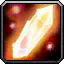
Large Radiant Shard18 Greater Nether Essence17
Greater Nether Essence17 Lesser Magic Essence15
Lesser Magic Essence15 Lesser Nether Essence15
Lesser Nether Essence15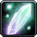
Large Glimmering Shard11 Lesser Astral Essence11
Lesser Astral Essence11 Essence of Air10
Essence of Air10 Lesser Mystic Essence10
Lesser Mystic Essence10 Greater Astral Essence9
Greater Astral Essence9 Lesser Eternal Essence9
Lesser Eternal Essence9 Small Glimmering Shard9
Small Glimmering Shard9 Essence of Water8
Essence of Water8 Small Brilliant Shard8
Small Brilliant Shard8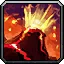
Essence of Fire7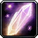
Large Glowing Shard7 Essence of Undeath6
Essence of Undeath6 Greater Mystic Essence6
Greater Mystic Essence6 Malleable Essence of Nature6
Malleable Essence of Nature6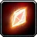
Small Radiant Shard6 Essence of Earth5
Essence of Earth5 Greater Magic Essence4
Greater Magic Essence4 Living Essence4
Living Essence4 Mote of Magic3
Mote of Magic3 Small Glowing Shard3
Small Glowing Shard3 Arcanite Rod1
Arcanite Rod1 Breath of Wind1
Breath of Wind1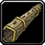
Copper Rod1 Core of Earth1
Core of Earth1- Elemental Earth1
 Elemental Fire1
Elemental Fire1 Globe of Water1
Globe of Water1 Heart of Fire1
Heart of Fire1 Ichor of Undeath1
Ichor of Undeath1 Silver Rod1
Silver Rod1 Truesilver Rod1
Truesilver Rod1
Engineering parts — 1
Thread, vials, dyes and other reagents — 22
 Star Wood13
Star Wood13 Cerulean Dye9
Cerulean Dye9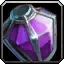
Magenta Dye9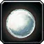
Righteous Orb6 Simple Wood5
Simple Wood5 Sulfuric Acid4
Sulfuric Acid4 Blood of the Mountain3
Blood of the Mountain3 Crystal Vial2
Crystal Vial2 Fel Crystal2
Fel Crystal2 Golden Pearl2
Golden Pearl2 Imbued Vial2
Imbued Vial2 Leaded Vial2
Leaded Vial2 Shadowgem2
Shadowgem2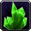
Torbernite2 Aquamarine1
Aquamarine1 Arcane Crystal1
Arcane Crystal1 Black Pearl1
Black Pearl1 Blackmouth Oil1
Blackmouth Oil1 Empty Vial1
Empty Vial1 Fire Oil1
Fire Oil1 Large Fang1
Large Fang1 Larval Acid1
Larval Acid1
Items used as reagents — 14
 Blood of Heroes5
Blood of Heroes5 Maple Seed2
Maple Seed2 Black Diamond1
Black Diamond1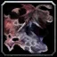
Frayed Abomination Stitching1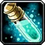
Frost Oil1 Maker's Spark1
Maker's Spark1 Potion of Demon Slaying1
Potion of Demon Slaying1 Red-speckled Mushroom1
Red-speckled Mushroom1 Scroll of Protection1
Scroll of Protection1 Scroll of Strength II1
Scroll of Strength II1 Shadow Protection Potion1
Shadow Protection Potion1 Skin of Shadow1
Skin of Shadow1- Stranglethorn Seed1
- Stratholme Holy Water1
Reagents of each recipe · 223 recipes
Correction history
- 12 November 2026 (draft, not approved): first complete list of this profession’s recipes, from client-extracted data, marked “to be confirmed”. No publication.[4][1]
- 13 November 2026: “to be confirmed” removed from facts found in the game files (client 1.60.1.70862), t359u decision. Acquisition marked “unknown”, zones not given, sources without a build stamp, and inferred values remain to be confirmed. This is not an official Blizzard confirmation, and not a publication.[4] Game data (client 1.60.1.70862)
- 14 November 2026: internal links to already published sheets (bestiaries, recipe lists, dungeons) — v40 batch, t361u. No new facts.[1][2][3][4]
- 17 November 2026 (v42): added the “Materials: where to find them” section (reagents of each recipe, read from the game files, client 1.60.1.70862).[5] Game data (client 1.60.1.70862)
What is confirmed / what remains to be confirmed
Confirmed by official sources
Still to be confirmed
- Complete official list of recipes, materials, prices and named trainers: not published by Blizzard.
- For some recipes, acquisition, source or zone was not given in the data consulted; those cells stay as “not recorded”.
- Drop rates: not given in the data consulted, and not officially published.
- Some recipes have no distinct French name in the data consulted: the English name is then used.
Key dates
Sources
- [1] World of Warcraft: Forever Deep Dive Panel Recap (EN) · published · accessed
Récapitulatif de la présentation « Au cœur de World of Warcraft: Forever » (FR) · published · accessed - [2] Gather Around the Campfire in World of Warcraft: Forever (EN) · published · accessed
Retrouvez-vous autour d’un feu de camp dans World of Warcraft: Forever (FR) · published · accessed - [3] WoW: Forever Hotfixes - November 11, 2026 (EN) · published · accessed
- [4] Enchanting profession guide — full recipe list (game data (client 1.60.1.70862) (EN) · no publication date shown · accessed
Guide Enchantement — liste des recettes (données du jeu (client 1.60.1.70862) (FR) · no publication date shown · accessed Game data — client 1.60.1.70862 - [5] WoW Forever client files, build 1.60.1.70862 — data tables and icons read from Blizzard’s official CDN (EN) · no publication date shown · accessed Game data — client 1.60.1.70862
Official Blizzard Entertainment sources (all rights reserved). This wiki offers an original synthesis; only short quotes are reproduced. Announced information may change before or after launch. Sources marked “game data” come from the WoW Forever client files (build 1.60.1.70862). This is not an official Blizzard confirmation.
Documentary version : World of Warcraft: Forever — annonces officielles et fichiers du jeu (client 1.60.1.70862), état documentaire 2026-11-17 · revision 17